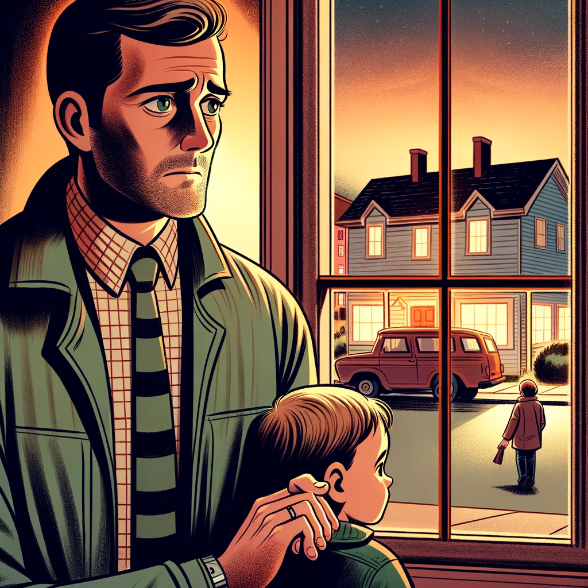

L'Heure des Masques
Guide du Jeu
1. Objectif du Jeu
Dans L'Heure des Masques, chaque joueur reçoit un rôle secret avec un pouvoir unique. Le but est de découvrir le coupable parmi les joueurs tout en utilisant vos pouvoirs pour influencer la partie.
Innocents : Gagnez en démasquant le coupable.
Coupable : Gagnez en restant le dernier en vie ou en évitant d’être démasqué.
2. Nombre de Joueurs
5 à 9 joueurs
3. Durée Moyenne d'une Partie
30 à 60 minutes
4. Matériel
- Cartes de Rôles : 1 par joueur
- Cartes d'Enlèvement : "Croix" (coupable), "Ronds" (innocents)
5. Liste des Rôles
Quelques exemples de rôles que vous pourriez rencontrer :
6. Pouvoirs des Rôles
| Rôle | Image | Pouvoir |
|---|---|---|
| Parent Inquiet |  | Protection |
| Ami Proche | Sacrifice | |
| Nouveau Voisin |  |
Échange de Rôle |
| Détective Amateur |  |
Arrestation Précipitée |
| Policier | Double Vote | |
| Maire de la Ville | Immunité | |
| Croque-Mort | Résurrection | |
| Gardien du Secret | Secret Révélé |
7. Règles Complètes
Pour une explication détaillée du déroulement de la partie, des pouvoirs des rôles, et des phases de jeu, veuillez consulter les Règles du Jeu.